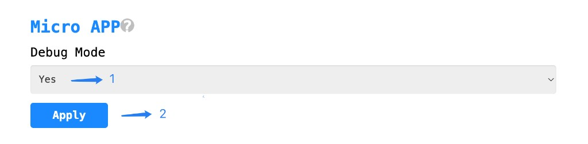
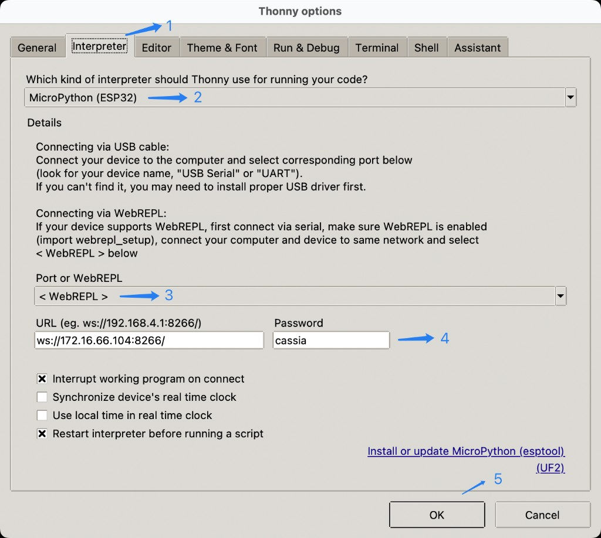
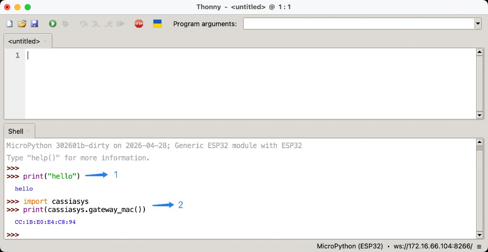

Debug Mode
In Debug Mode, developers can use Thonny to connect to the gateway remotely via WebREPL, executing MicroPython code in real time, debugging APP logic, or invoking APIs interactively on the gateway.
Enter Debug Mode
Go to the
Otherpage and navigate to theMicro APPsection.Set
Debug ModetoYes.Click the
Applybutton to save the configuration.
Caution
Debug Mode is intended only for development and integration testing. Do not keep it enabled in production environments.

Configure Thonny
Thonny is a lightweight Python IDE with built-in MicroPython support, which can connect to the gateway directly via WebREPL.
Open Thonny and select the
Run→Configure interpreter→Interpretertab.For
Which kind of interpreter should Thonny use for running your code?, selectMicroPython (ESP32).For
Port or WebREPL, select< WebREPL >.Fill in
URLwithws://<gateway-IP>:8266/. The defaultPasswordiscassia.Click
OKto save the configuration.
Note
<gateway-IP> is the IP address of the gateway on the local network. Replace it with the actual value.

Code Debugging
Write Python scripts in the Thonny editor; they will be executed directly on the gateway, and the output is displayed in the Shell panel.
Write your code in the editor, for example a file named
hello.pywith the following content:print("hello")
Click the
Runbutton (the green triangle) in the toolbar to run the script.Check the result in the
Shellpanel.WebREPL connectedindicates a successful connection, andhellois the script’s output.

Interactive Mode
You can enter MicroPython statements directly in Thonny’s Shell panel. Statements are executed line by line and the return values are shown immediately, which is convenient for quickly verifying APIs.
Enter a statement directly after the
>>>prompt, for exampleprint("hello").Import an SDK module to call its API and inspect the return value, for example:
>>> import cassiasys >>> print(cassiasys.gateway_mac()) CC:1B:E0:E4:C8:94
